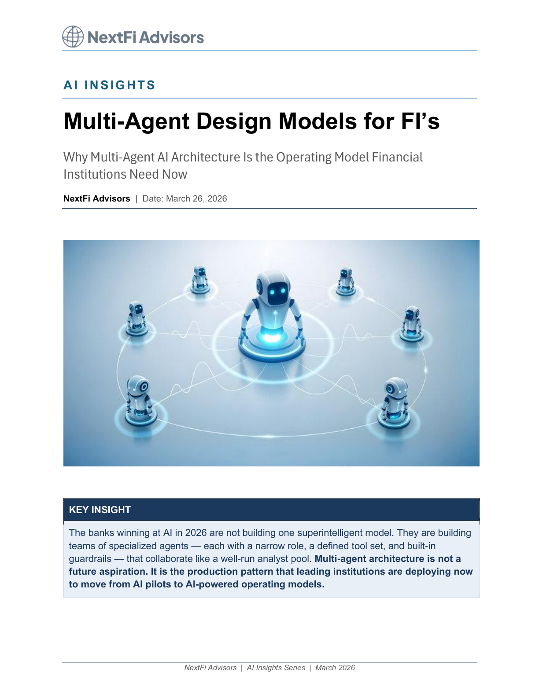

Enterprise Architecture
Multi-Agent Design Models for Financial Institutions

Executive summary
- Single-agent automation breaks down when workflows require cross-functional judgement and staged controls.
- Multi-agent systems improve reliability by assigning specialized roles for reasoning, retrieval, validation, and execution.
- Financial institutions should design orchestration patterns around policy checkpoints and exception handling.
- Model capability alone is insufficient without architecture for auditability and supervisory governance.
- Adoption should start in bounded workflows where quality metrics and escalation paths are explicit.
Why orchestration becomes the core design problem
As institutions scale AI into complex operating processes, the central question is no longer model access. It is coordination of specialized tasks with deterministic handoffs and control boundaries.
Five design patterns that transfer into regulated environments
The brief outlines repeatable multi-agent patterns for workflow planning, grounded evidence retrieval, policy checks, and human escalation to maintain trust in high-stakes decisions.
Implementation path
Teams should begin with internal decision-support use cases and instrument each stage with outcome and exception telemetry before production expansion.